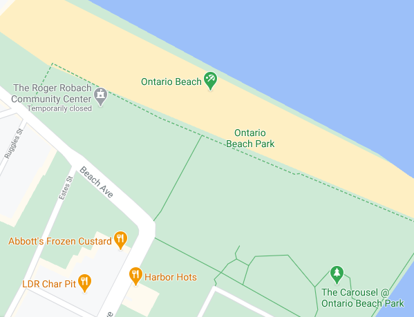
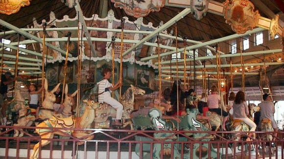

Welcome to Ontario Beach Park! Situated right along one of the finger lakes, this is a wonderful place to come and visit when the weather is warm and the days are long.
Sporting a 7 mile long trail, visitors will be able to take part in a level walking experience with a breathtaking view of a sparkling lake, natural swamps, local wildlife, and even bits of Rochestarian suburbs.
Along the way there are many restaurants to visit and sample, and being along the beach, they all come with their own view. From burgers to fish, family owned to chain, there are plenty of options to choose from.

One of the most controversial attractions you can find within Ontario Beach Park, is the 1905 Dentzel Menagerie Carousel. Being one of the oldest carousels in the country, this used to be a well loved monument to history; it wasn’t until a visitor noticed some rather racist imagery on the piece, that its place in Ontario Beach was put to question.
In 2016, after a scathing news report and a committee meeting, the offending panel was taken down. The panel was then moved to a roaming exhibit, with the help of the “Take it Down Planning Committee” and “Rochester Museum and Science Center”.
The Dentzel Menagerie Carousel still stands, and runs, as one of the oldest carousels in the United States.
After a long day of walking and seeing the sites, a cold refreshing treat won’t go unwelcome. Abbott's Frozen Custard boasts of being the oldest frozen custard stand in the country, having been around since 1902. Although the times may have changed, Abbott’s recipe has not, as they continue to serve their original vanilla, and chocolate, custards. Each day they offer a few new flavors to sample, but their vanilla and chocolate custards are a staple that’s always available (provided they don’t sell out before you get there)!